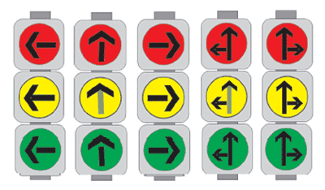

Svetlosni saobraćajni znakovi - SEMAFORI
Broj pitanja: 42
Semafori su uređaji za davanje svetlosnih znakova.
Koriste se za regulisanje saobraćaja i
označavanje radova i prepreka na putu
Crveno svetlo znači zabranjen prolaz
Istovremeno uključeno crveno i žuto svetlo znači zabranјen prolaz i nagoveštaj zelenog svetla
Zeleno svetlo znači dozvoljen prolaz
Žuto svetlo značo zabranјen prolaz, osim u slučaju kada se vozilo ne može bezbedno zaustaviti ispred navedenog znaka
Žuto trepćuće svetlo označava obavezu za sve učesnike u saobraćaju da se kreću uz povećanu opreznost
Zeleno trepćuće svetlo znači (još uvek) slobodan prolaz i nagoveštaj skorog prestanka slobodnog prolaza uključenjem žutog svetla

Identična značenja imaju i semafori sa strelicama s tim što se tada značenje svetlosnog znaka odnosi samo na smerove koji su označeni strelicama
.jpg)
Zelena (uslovna) strelica na semaforu označava dozvoljen prolaz samo u smeru označenom strelicom pri čemu se moraju propusti sva vozila koja se kreću po putu na koji se ulazi kao i pešaci koji prelaze preko kolovoza
.jpg)
U situaciji kao na slici kretanje bi smeli nastaviti putanjama 1 ili 2
.jpg)
Zabrana kretanјa duž saobraćajne trake iznad koje se ovaj znak nalazi
.jpg)
Slobodan prolaz vozila duž saobraćajne trake iznad koje se ovaj znak nalazi
.jpg)
Žuta trepćuća strelica označava obaveznu promenu saobraćajne trake iznad koje se ovaj znak nalazi i obavezu kretanјa saobraćajnom trakom na koju upućuje strelica
.jpg)
Žuta trepćuća strelica označava obaveznu promenu saobraćajne trake iznad koje se ovaj znak nalazi i obavezu kretanјa saobraćajnom trakom na koju upućuje strelica
.jpg)
Semafori prikazani na slici namenјeni su za regulisanje pristupa vozila
.jpg)
Uključena položena crtna na semaforu za tramvaje označava zabranu prolaska za tramvaje kao i ostalih vozila za javni prevoz putnika kada se ona kreću saobraćajnom trakom kojom se kreću i tramvaji
.jpg)
Slobodan prolaz u odgovarajućem smeru na koji ukazuje kosa crta
.jpg)
Brojčana oznaka na semaforu označava preporučenu brzinu kojom vozilo treba da se kreće da bi na narednom semaforu imalo slobodan prolaz